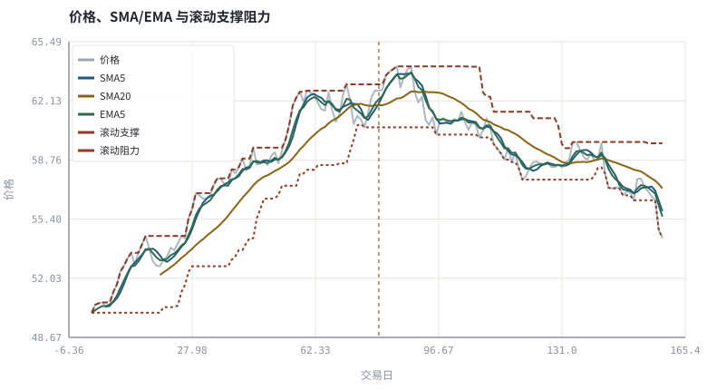
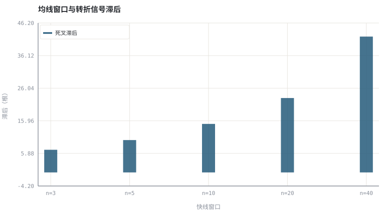

第 17 章均线、趋势与支撑阻力
均线是低通滤波器：它削掉噪声的代价，是必然带来滞后。
本章位置：第 16 章把 OHLCV 画成图，本章加第一层平滑；第 18 章 · MACD、RSI、布林带与 KDJ 的数学定义 把平滑扩展成多指标公式，第 19 章 · 形态识别：从主观描述到可判定规则 把形态写成可判定规则。
SMA 是长度固定的滑动窗口聚合，EMA 是带衰减因子的递归状态。交叉信号是 sign(fast − slow) 的变号事件；任何滤波都得在噪声与延迟之间付代价。
- 能实现 SMA 与 EMA，并说明二者的权重分布差异。
- 能计算交叉信号的滞后，并量化窗口长度与滞后的权衡。
- 能把「趋势」「支撑阻力」写成可判定的规则。
- 能解释为什么均线在震荡市里会频繁假信号。
§知识点地图
每个知识点都配了 1～2 个扩展学习链接；本章完整资源清单见 扩展学习。
| # | 知识点 | 扩展学习 | 状态 |
|---|---|---|---|
| 1 | 简单移动平均 SMA | Moving average · Support and resistance | 正文已覆盖 |
| 2 | 指数移动平均 EMA | Moving average · Support and resistance | 正文已覆盖 |
| 3 | 低通滤波与滞后 | Moving average · Support and resistance | 正文已覆盖 |
| 4 | 金叉与死叉 | Moving average · Support and resistance | 正文已覆盖 |
| 5 | 趋势的定义 | Moving average · Support and resistance | 正文已覆盖 |
| 6 | 支撑与阻力 | Support and resistance · Chart pattern | 正文已覆盖 |
| 7 | 成交密集区 | Volume (finance) · OHLC chart | 正文已覆盖 |
| 8 | 假信号与震荡市 | Moving average · Support and resistance | 正文已覆盖 |
§17.1两种平滑，两种权重
SMA_n(t) = (1/n) Σ_{i=0}^{n−1} P_(t−i) | EMA(t) = αP_t + (1−α)EMA(t−1), α = 2/(n+1)
SMA 对窗口内每一天等权，窗口滚动时会出现「旧数据掉出」造成的阶跃；EMA 对近端指数加权，反应更快且没有掉出效应，但永远不会完全忘记历史。从信号处理角度，两者都是低通滤波器：窗口越长噪声越少，滞后越大。
§17.2把主观词写成判定式
| 词 | 可判定定义（示例） | 自由度 |
|---|---|---|
| 上升趋势 | close > SMA_n 且 SMA_n 较 k 期前上升 | n、k |
| 金叉 | fast_(t−1) ≤ slow_(t−1) 且 fast_t > slow_t | fast、slow 窗口 |
| 支撑位 | 过去 m 期局部低点的密集价格带 | m、容差、聚类宽度 |
| 突破 | close > 过去 m 期最高价 × (1 + ε) | m、ε、成交量条件 |
注意每个定义都带自由参数。参数越多、越容易在历史上调出好看的结果，也就越容易过拟合（第 28 章）。把参数写进代码并固定下来，是让结论可讨论的前提。
§17.3支撑阻力：成交密集区的自我实现
支撑与阻力常被解释为「前期成交密集区的记忆」：在某一价格带套牢的持仓者，回到成本附近时倾向卖出，从而形成供给。但这是一种行为假说，不是物理定律。第 22 章会从处置效应、锚定等角度给出更基础解释，第 24 章则讨论怎样检验这类假说。
§Python 分析实例
实验 17-1 · SMA/EMA、交叉滞后与支撑阻力
#!/usr/bin/env python3
# -*- coding: utf-8 -*-
"""在带转折的合成价格上计算均线，检测交叉，量化窗口—滞后权衡。
数据为合成数据或模型示意，仅用于教学，不构成投资建议。
"""
from __future__ import annotations
import math
import pathlib
import random
import statistics
import sys
sys.path.insert(0, str(pathlib.Path(__file__).resolve().parents[3] / "tools"))
from chart import Chart, candlestick, heatmap, BLUE, RED, GREEN, AMBER
FIG = pathlib.Path(__file__).resolve().parents[1] / "fig"
FIG.mkdir(exist_ok=True)
random.seed(7)
# ---- 参数区 ----
N = 160
TURN = 80 # 真实趋势转折点
START = 50.0
UP, DOWN = 0.004, -0.003
NOISE = 0.010
FAST, SLOW = 5, 20
LOOKBACK = 20
# ---- 计算与作图 ----
rng = random.Random(7)
px, prices = START, []
for i in range(N):
drift = UP if i < TURN else DOWN
px *= (1 + drift + rng.gauss(0, NOISE))
prices.append(px)
def sma(series, w):
return [None if i + 1 < w else statistics.fmean(series[i + 1 - w:i + 1])
for i in range(len(series))]
def ema(series, w):
a, out, prev = 2.0 / (w + 1), [], series[0]
for v in series:
prev = a * v + (1 - a) * prev
out.append(prev)
return out
fast, slow, ema_fast = sma(prices, FAST), sma(prices, SLOW), ema(prices, FAST)
crosses = []
for i in range(1, N):
if None in (fast[i - 1], slow[i - 1], fast[i], slow[i]):
continue
if fast[i - 1] <= slow[i - 1] and fast[i] > slow[i]:
crosses.append((i, "金叉"))
if fast[i - 1] >= slow[i - 1] and fast[i] < slow[i]:
crosses.append((i, "死叉"))
support = [min(prices[max(0, i + 1 - LOOKBACK):i + 1]) for i in range(N)]
resist = [max(prices[max(0, i + 1 - LOOKBACK):i + 1]) for i in range(N)]
def clean(series):
xs = [i for i, v in enumerate(series) if v is not None]
return xs, [series[i] for i in xs]
xf, yf = clean(fast)
x_slow, y_slow = clean(slow)
c = Chart(FIG / "17-trend.svg", "价格、SMA/EMA 与滚动支撑阻力", xlabel="交易日", ylabel="价格")
c.line(range(N), prices, "#9aa6b2", label="价格", opacity=0.8)
c.line(xf, yf, BLUE, label="SMA5")
c.line(x_slow, y_slow, AMBER, label="SMA20")
c.line(range(N), ema_fast, GREEN, label="EMA5")
c.line(range(N), support, RED, label="滚动支撑", dash="3 3")
c.line(range(N), resist, RED, label="滚动阻力", dash="6 3")
c.vline(TURN, "#8a6316", label="真实转折点")
print("趋势图:", c.save())
windows = [3, 5, 10, 20, 40]
lags = []
for w in windows:
f, s = sma(prices, w), sma(prices, w * 2)
first = next((i for i in range(TURN, N)
if f[i] and s[i] and f[i - 1] and s[i - 1]
and f[i - 1] >= s[i - 1] and f[i] < s[i]), N)
lags.append(first - TURN)
l = Chart(FIG / "17-lag.svg", "均线窗口与转折信号滞后", xlabel="快线窗口", ylabel="滞后（根）",
xticks=[(i, "n=%d" % w) for i, w in enumerate(windows)])
l.bars(range(len(windows)), lags, BLUE, label="死叉滞后")
print("滞后图:", l.save())
post_death = [x for x in crosses if x[0] >= TURN and x[1] == "死叉"]
print("交叉总数=%d 转折前噪声交叉=%d | 转折后首个死叉=%s | 窗口 %s 对应滞后 %s | 真实转折 T%d" %
(len(crosses), len([x for x in crosses if x[0] < TURN]),
post_death[0] if post_death else "无", windows, lags, TURN))操作：把 SLOW 从 20 改成 40，数一数交叉次数是否减少；再观察滞后图随窗口增大的趋势。 预期与判读：转折后的趋势交叉必然滞后于真实转折，窗口越长滞后越大；转折前也可能因噪声出现假交叉。支撑/阻力在这里只是滚动极值，参数一改结论就变——这正是需要样本外检验的原因。
改参数看趋势：把 NOISE 翻倍，短窗口的交叉次数会明显增多，说明噪声被误判成趋势。 文件位置：part3/17-trend-ma/code/17-trend.py


代码块右上角可一键复制；仓库里的 code/*.py 由 tools/extract_code.py 从这些代码块自动抽取。脚本只用标准库、固定 random.seed(7)，运行后写出 fig/*.svg；批量运行用 ./tools/run_python.sh。
§本章参考资料
按本章知识点挑选的精读资料；更多检索入口见 扩展学习。
Support and resistance
百科 · 参考资料成交密集区与自我实现的价位
怎么用：支撑阻力的常见解释与争议https://en.wikipedia.org/wiki/Support_and_resistance
Technical analysis
百科 · 参考资料价量研究的假设、流派与争议
怎么用：价量研究的假设、流派与争议https://en.wikipedia.org/wiki/Technical_analysis
§常见误区
- 把均线当成有预测能力的模型，忽略它只是过去价格的函数。
- 在震荡市里用短窗口频繁交易，成本吞掉全部信号。
- 事后在图上画支撑线，把任意价位都能解释成「有效支撑」。
- 把交叉点当日收盘当作可成交价（未来函数）。
§习题与思考
- 推导 EMA 的等效权重之和为 1，并说明它为何没有 SMA 的掉出效应。
- 在示例里统计震荡区间（去掉趋势段）的交叉次数，与趋势段比较。
- 把「突破」写成带成交量的判定式，说明新增了哪些自由参数。
§扩展学习
以下资料按本章知识点挑选，可直接精读或对照真实数据；知识点地图里每一条也挂了 1～2 个直达链接。
- Moving average（百科）：均线族与滞后性
Moving average - Support and resistance（百科）：成交密集区与自我实现的价位
Support and resistance - Technical analysis（百科）：价量研究的假设、流派与争议
Technical analysis - TradingView（行情）：多周期图表、指标脚本与 K 线形态的通用参照
TradingView
继续扩展：在 Google Scholar 检索本章相关论文 · 在 MIT OCW 检索配套课程 · 在 arXiv 检索预印本 · 全书参考资源总表 · 附录 A 速查与链接总表
§延伸阅读与内链
- 第 18 章 · MACD、RSI、布林带与 KDJ 的数学定义 指标的数学定义；第 20 章 · 用代码画图：SVG 图与看图陷阱 未来函数与画图陷阱；第 28 章 · 过拟合、多重检验与滚动样本外 参数扫描与过拟合。